링크 인 바이오 대신 챗봇으로
발표자는 OnlyFans 대행사 99%가 똑같이 움직인다고 말해요. 인스타그램, 트위터(X), 스레드에 짧은 영상을 올리고, 관심이 생긴 사람을 프로필의 링크 인 바이오로 모아 OnlyFans나 Fanvue로 곧장 보내요.
문제는 그 사람에게 계정이 없을 때예요. 가입이 귀찮거나 굳이 필요 없다고 느끼면 가입 화면에서 그대로 떠나요. 아래 장면이 그 순간이에요. OnlyFans의 'Create an account' 창 위에 빨간 'CUSTOMER LOST' 도장이 찍혀 있어요.
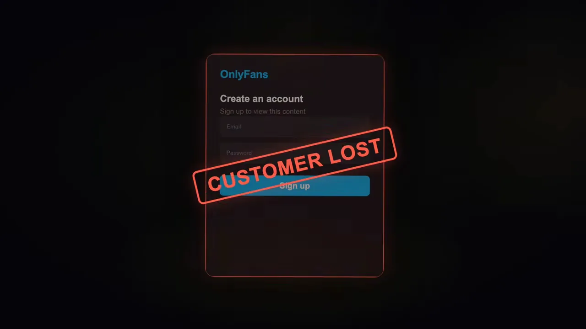
해결책은 링크 끝에 구독 페이지 대신 대화창을 두는 거예요. 다음 장면에서 왼쪽 'CLIENT' 아이콘에서 선이 두 갈래로 나가요. 위는 OnlyFans 구독 카드, 아래는 모델과의 채팅 창이에요.
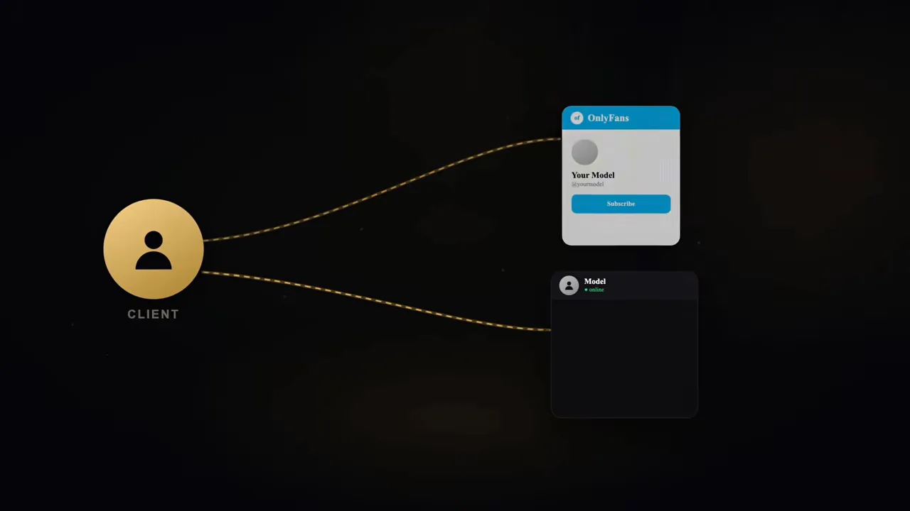
방문자는 모델과 대화한다고 믿지만 실제 상대는 챗봇이에요. 챗봇은 몇 시간에서 이틀쯤 대화하며 사진과 음성 메시지를 보내고, 상대가 충분히 마음이 기운 뒤에 구독 링크를 건네요. 발표자는 원래라면 놓쳤을 사람을 이렇게 붙잡아 구독자가 두 배로 는다고 말해요. 두 경로를 나란히 그리면 이래요.
mydm.bio로 링크 만들기
시연 도구는 mydm.bio예요. 발표자는 월 99달러라 싸다고 소개해요. 첫 화면인 Overview에는 대화 수, 메시지 수, 링크 클릭('CTA links'), 전환 수, 전환율 칸이 나란히 있어요. 새 계정이라 모두 0이에요. 왼쪽 메뉴 맨 아래에는 스푸퍼(Spoofer) 메뉴가 따로 있어요.
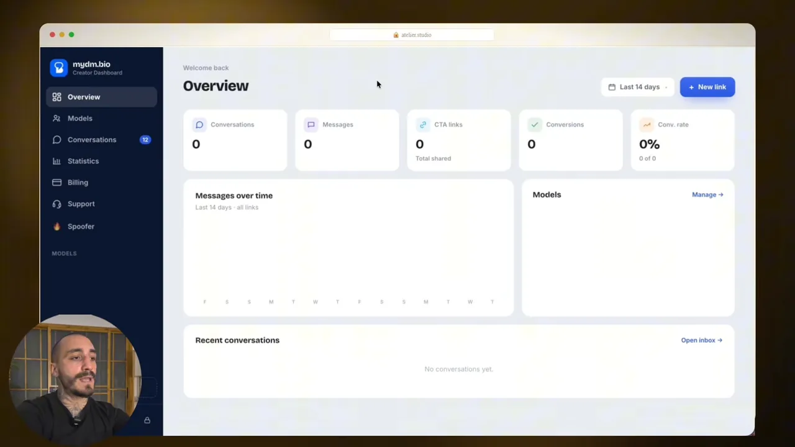
발표자는 Spoofer 기능으로 인스타그램 릴스 네 편을 올려 봤고 모두 노출이 잘 됐다고 말해요. 어떤 원리인지는 설명하지 않아요.
링크 만들기는 두 단계예요. 먼저 New model로 모델 이름과 사진을 올리고, 이어서 New link로 링크를 만들어요. 아래 Create a link 화면을 위에서부터 보면 플랫폼(Instagram, X, Threads), 링크 이름, 연결할 모델(Lucie), 그리고 'Where this link sends real visitors' 선택지가 있어요.
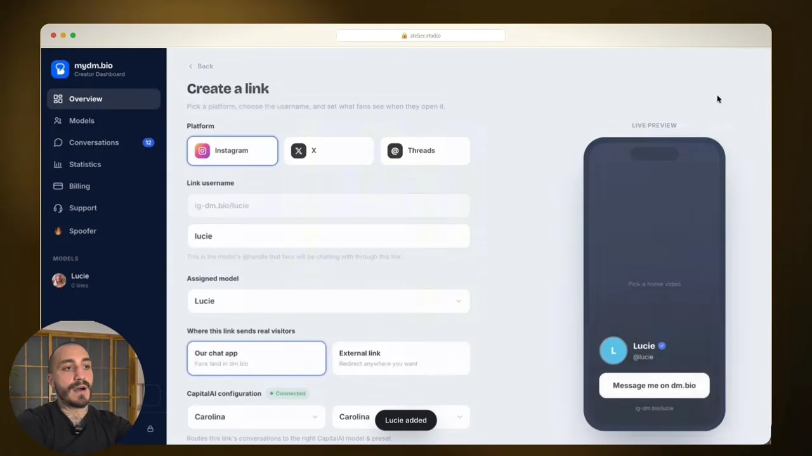
아래로 내리면 나라 차단과 클로킹 설정이 나와요. Blocked countries에 넣은 나라(화면에서는 Bahamas)의 방문자는 진짜 링크 대신 안전한 페이지를 봐요. 발표자는 특정 나라 전체를 막는 예를 들어요. 그 아래 Cloaking 칸은 'Always on'으로 켜져 있고, 'Bot/scanner'는 'Safe page'로, 'Real visitor'는 'Your dm.bio'로 가는 그림이 붙어 있어요.
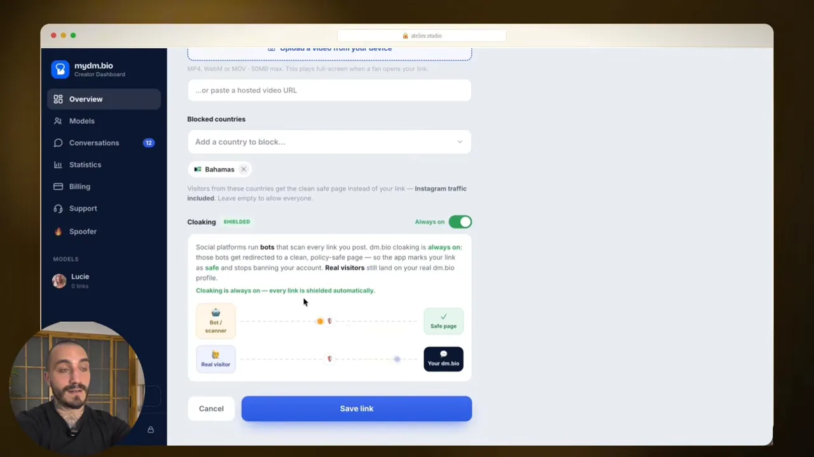
클로킹은 어떻게 작동하나요
인스타그램과 X는 프로필에 걸린 링크를 봇으로 검사해요. 봇이 링크를 따라갔다가 다른 페이지로 넘어가는 수상한 흐름을 보면 계정을 정지하기도 해요. 발표자는 많은 계정이 이 때문에 정지된다고 말해요. 아래 장면에서 'BOT'이 'LINK IN BIO'를 따라가자 빨간 'EXPOSED' 표시와 함께 OnlyFans 주소가 드러나요.
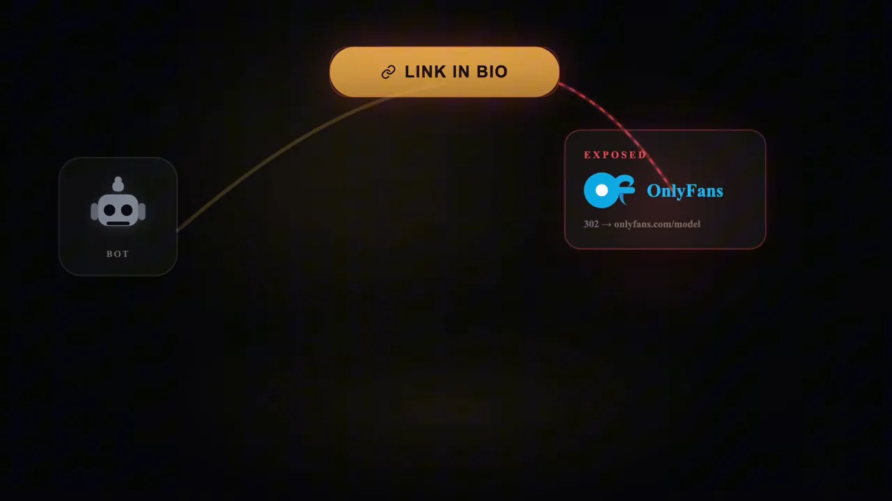
클로킹을 켜면 길이 갈라져요. 아래 장면에서 초록색 'BOT'은 Wikipedia 카드로 가고, 사람 아이콘은 오른쪽 'REAL PAGE' 상자(OnlyFans, Fanvue)로 가요. 아래쪽 'TRUST' 막대는 98%까지 차 있어요.
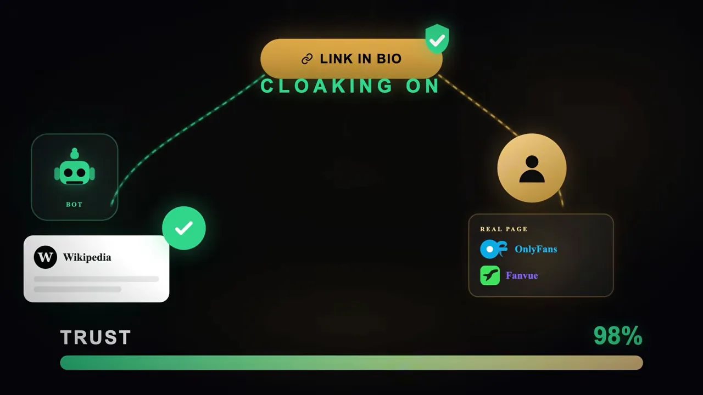
| 누가 링크를 누르나요 | 보는 페이지 | 발표자가 말하는 효과 |
|---|---|---|
| 플랫폼의 검사 봇 | 위키백과처럼 무관한 안전한 페이지 | 링크가 안전해 보여 신뢰 점수가 올라가요 |
| 실제 방문자 | 챗봇 대화창이나 구독 페이지 | 원래 의도한 곳으로 가요 |
| 차단한 나라의 방문자 | 안전한 페이지 | 원하지 않는 지역의 유입을 막아요 |
휴대폰으로 해 본 대화
발표자는 만든 링크를 인스타그램 메시지로 자기에게 보내고, 휴대폰에서 눌러 봐요. 인스타그램 앱 밖으로 나가면 아래 화면이 떠요. 가운데 큰 아이콘 주위로 X, 텔레그램, 틱톡, 인스타그램 같은 앱 로고가 흩어져 있고, 아래에 모델 Lucie의 프로필과 'Message me on dm.bio' 버튼이 있어요.
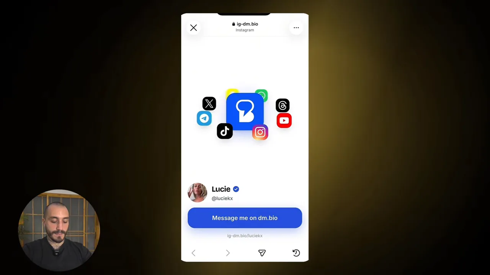
버튼을 누르면 'Add Lucie to your friends' 창이 떠요. 친구 추가를 누르는 순간부터 대화가 시작돼요. 구독도 가입도 없이 이름만 걸고 바로 들어가는 구조예요.
발표자가 'Hello how are you?'라고 보내자 챗봇은 바로 답하지 않아요. 사람처럼 보이려고 잠깐 기다렸다가 '입력 중' 표시를 띄워요. 아래 대화를 위에서부터 보면 챗봇이 'Hii Hoo'와 이모지로 답하고, 22살이라며 나이를 되물어요. 사진을 보여 달라는 말에는 2초짜리 음성 메시지를 보내고, 맨 아래 'View photo'로 사진도 보내요.
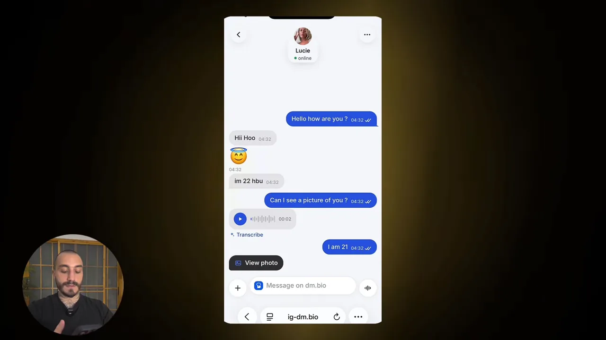
발표자는 사진과 음성 메시지를 원하는 대로 미리 넣어 둘 수 있고, 챗봇이 가장 알맞은 때에 꺼내 쓴다고 설명해요. 이 대화 끝에 OnlyFans나 텔레그램 링크를 건네는 게 전체 흐름이에요.
텔레그램으로 넘기고 대본대로 팔기
발표자는 대화창에서 OnlyFans로 넘긴 뒤에도 챗봇을 하나 더 쓴다고 말해요. OnlyFans 안에서 같은 사람과 대화하며 성인 콘텐츠를 파는 챗봇이에요. 그런데 요즘 더 좋게 보는 방법은 최종 목적지를 텔레그램으로 바꾸는 거예요. 아래 장면에서 DESTINATION 자리에 텔레그램 로고가 들어가고, 오른쪽에 'Content channel' 창이 떠 있어요.
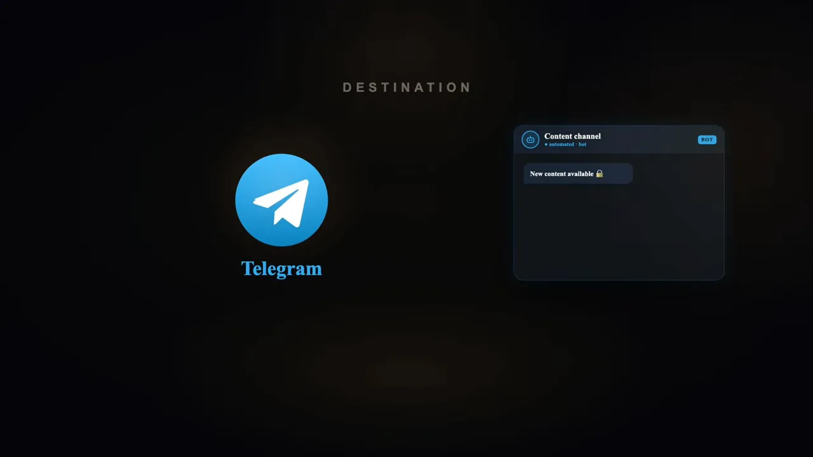
텔레그램에서도 챗봇이 콘텐츠를 팔아요. 콘텐츠는 블러 처리해 잠가 두고, 값은 Telegram Stars로 받아요. 아래 화면의 자물쇠 카드에 'locked · blurred', 옆에 'no card · pay in-app'이라고 적혀 있어요.
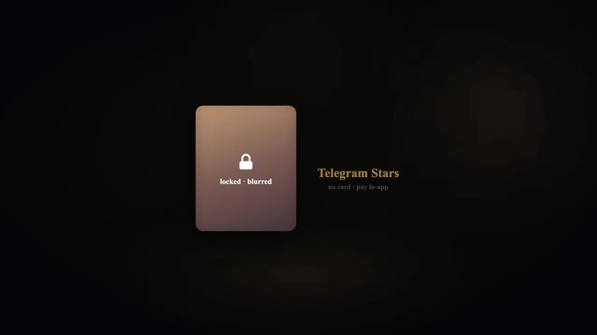
발표자는 이 결제 문턱을 OnlyFans와 비교해요. 아래 'EVEN BETTER' 화면에서 OnlyFans 줄에는 빨간 X와 'type your credit card — friction', 텔레그램 줄에는 초록 체크와 'one tap — no card needed'가 붙어 있어요. Apple Pay로 얼굴 인증만 하면 결제가 끝난다는 거예요.
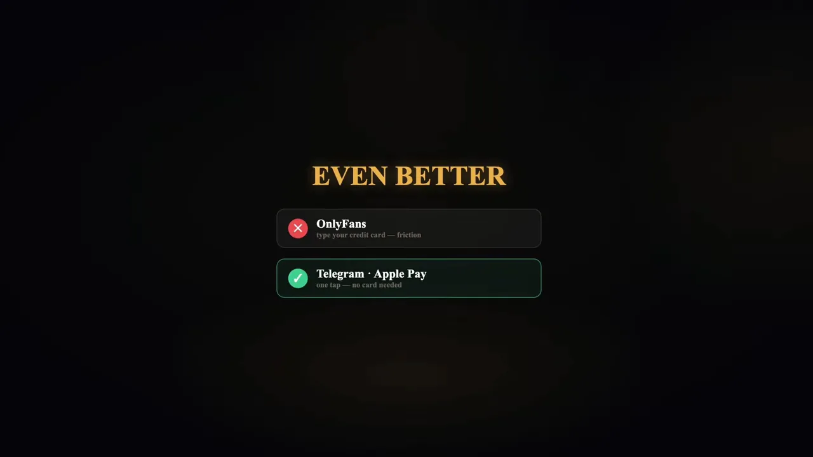
심리적인 이유도 들어요. 모델이 텔레그램 연락처를 건네면 받는 쪽은 '개인 연락처를 받았다'고 느껴요. 그래서 '또 판매 계정이구나' 하고 의심하지 않고 메시지를 보낸다는 거예요.
발표자가 쓰는 챗봇은 두 개예요. 아래 'THE CHATBOTS' 화면에서 OnlyFans 아래에는 Substai, 텔레그램 아래에는 OnlyChat이 연결돼 있어요. 발표자는 OnlyFans용은 자기 대행사에서, 텔레그램용은 친구가 쓰고 있다고 말해요.
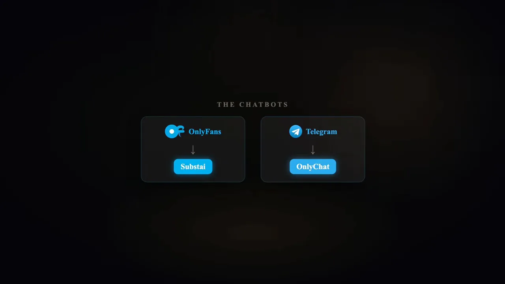
대본 없이 팔면 안 돼요
마지막으로 발표자는 챗봇에 콘텐츠만 넣어서는 돈이 안 된다고 경고해요. 아무 PPV(Pay-Per-View)나 던지는 게 아니라 정해진 대본(시나리오)을 따라야 한다는 거예요. 상황을 천천히 진행하면서 첫 결제는 10달러, 다음은 20달러, 그다음 50달러로 올려요. 그렇게 대화 하나가 끝날 때 200~300달러가 된다고 말해요.